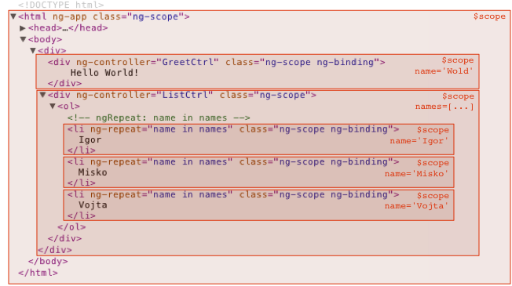

The $scope View of the World
- The scopes of the application refer to the application model.
- Scopes serve as the glue between the controller and the view.
- Scopes in AngularJS have hierarchy.
- Scopes provide the ability to watch for model changes.
- Scopes are the source of truth.
All properties found on the $scope object are automatically accessible to the view.
<a href="#/home"></a>
<div ng-app="myApp">
<h1>Hello {{ name }}</h1>
</div>
code:
angular.module('myApp', [])
.run(function($rootScope) {
$rootScope.name = "World";
});
Scope characteristics
- They provide observers to watch for model changes.
- They provide the ability to propagate model changes.
- They can be nested.
- Behaviors can be assigned to scopes.
- They can emit and listen for events.
- They provide an execution environment in which expressions are evaluated.
Scope Hierarchies.
<div class="show-scope-demo">
<div ng-controller="GreetController">
Hello {{name}}!
</div>
<div ng-controller="ListController">
<ol>
<li ng-repeat="name in names">{{name}} from {{department}}</li>
</ol>
</div>
</div>
code:
angular.module('scopeExample', [])
.controller('GreetController', function($scope, $rootScope) {
$scope.name = 'World';
$rootScope.department = 'Angular';
})
.controller('ListController', function($scope) {
$scope.names = ['Igor', 'Misko', 'Vojta'];
});
Hierarchies structures
Hierarchies structures
Scope Hierarchies.
<div id="myApp">Initializing...</div>
<script type="text/template" id="myTemplate">
<div ng-controller="myController">
<input type="text" ng-model="model"/>
{{model}}
<button ng-click="reset()">Reset</button>
</div>
</script>
code:
var app = angular.module("myApp", []);
app.controller("myController", function($scope) {
$scope.model = '';
$scope.reset = function() {
$scope.model = '';
};
});
angular.element(document).ready(function() {
var template = document.getElementById("myTemplate");
var appDiv = document.getElementById("myApp");
setTimeout(function() {
appDiv.innerHTML = template.innerHTML;
angular.bootstrap(angular.element(appDiv), ['myApp']);
}, 1000);
});